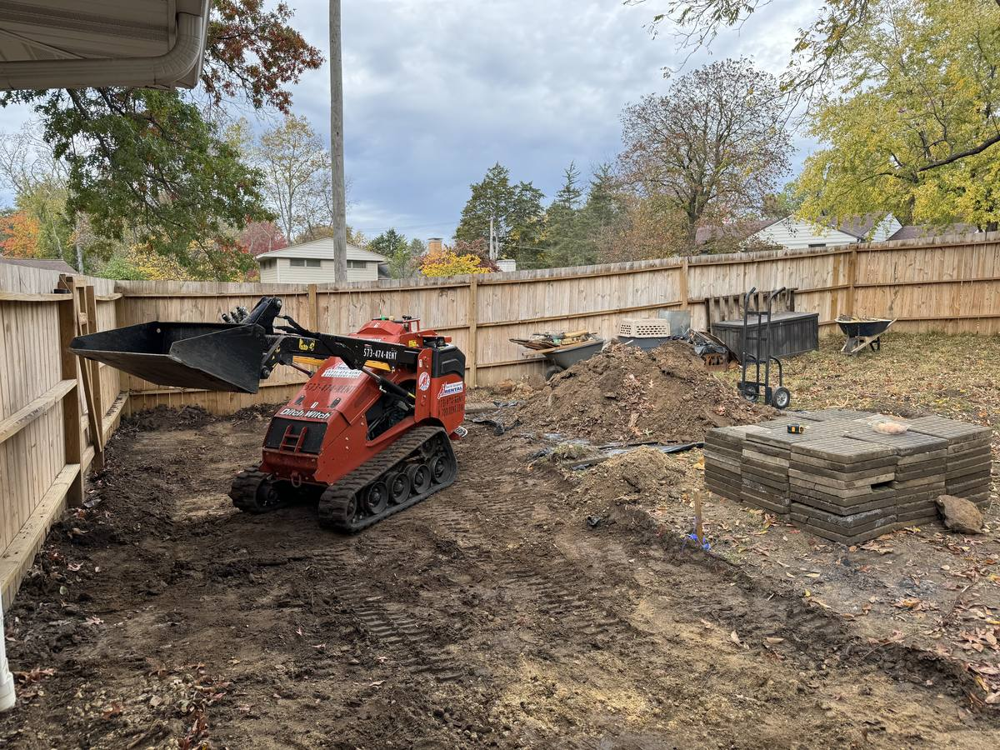

If you've got overgrown land around Columbia, MO and you're weighing forestry mulching against traditional clearing, here's the short version: mulching grinds the brush and small trees into mulch right where they stand, in one pass, with nothing hauled off. Traditional clearing pushes everything into piles to burn or truck away. They cost different amounts and leave your land in a completely different state.
I'm Chris Kurtz, owner of Atlas Excavation & Demolition. We clear land every week across Columbia, MO and the rest of Mid-Missouri, and forestry mulching is the question I get more than any other. This post walks through what mulching actually is, how the machine works, and exactly when it's the right call versus when you're better off with a dozer.
Quick Answer: Forestry mulching in Columbia, MO uses one machine with a grinding head to cut brush and trees up to about 6 to 8 inches across and shred them into mulch in place. There's no hauling, no burning, and the chip layer left behind controls erosion. It's the better choice for clearing brush, reclaiming pasture, opening trails, and thinning woods. Traditional clearing wins when you need stumps and roots out for a build, or when the land is mostly large mature timber. Call Atlas at (573) 234-6641 for a free on-site walkthrough.
In This Guide:
What Forestry Mulching Actually Is
Forestry mulching is a one-step land clearing method. A single machine, usually a skid steer or a tracked carrier with a heavy grinding head on the front, drives across your property cutting brush, vines, saplings, and trees and shredding them into chips on the spot. The cutting, grinding, and spreading all happen in one pass.
The key difference from every older method is what happens to the material. There's no separate step where a crew pushes debris into piles. Nothing gets loaded onto a truck. Nothing gets burned. The ground-up wood and brush stays right there as a layer of mulch. That single change is what makes mulching faster and, on the right job, cheaper than the way land used to get cleared around here.
People call it a few different things. Brush mulching, forestry mowing, mulch clearing, and forestry grinding all point at the same basic process. Whatever the name, the picture is the same: green, overgrown ground goes in, and a clean, chip-covered surface comes out, all in one trip.
How the Mulching Machine Works
The business end is a drum or disc spinning fast with carbide teeth or fixed knives. As the operator pushes the head into standing growth, those teeth shave the brush and trees down and keep grinding the material until it falls as chips. A skilled operator can take a tree off at the base and then lower the head and grind the trunk and limbs into the same mulch layer without ever stopping.
Because it's one machine and one operator, mulching has a small footprint. It doesn't tear up as much ground as a dozer that's pushing piles back and forth, and it can work between trees you want to keep. That's a real advantage when you want to thin a woods or clear an understory without leveling everything.
The limit is stem size. The head eats brush and saplings without slowing down, and it handles trees up to roughly 6 to 8 inches in trunk diameter at a good pace. Bigger than that and the machine has to work each tree longer, so the cost per acre climbs. That ceiling is the single biggest factor in whether mulching is the right tool for your property.
Forestry Mulching vs. Traditional Land Clearing
Traditional land clearing uses a dozer or an excavator to push and pull trees and brush out of the ground, pile it, and then burn it or haul it off. It's the old reliable method, and for some jobs it's still the right one. But it works the land differently than mulching does.
Here's how the two stack up on the things that actually matter to a property owner.
| Factor | Forestry Mulching | Traditional Clearing |
|---|---|---|
| Debris | Ground into mulch, left in place | Piled, then burned or hauled off |
| Steps | One pass, one machine | Cut, pile, haul or burn, cleanup |
| Roots and stumps | Stay in the ground | Can be fully removed |
| Surface left behind | Chip layer, erosion protected | Bare, disturbed soil |
| Best tree size | Up to about 8 inches | Any size, including mature timber |
| Build-ready? | No, roots and chips remain | Yes, with grading |
| Cost | Lower on brush and small trees | Higher, but necessary for big timber and builds |
The short read on that table: mulching is the lighter-touch, lower-cost option for most brush and small-tree work, and traditional clearing is what you bring in when you need the ground stripped to bare, build-ready dirt or you're dealing with a stand of big hardwoods. For a full breakdown of what each method runs per acre, see our land clearing cost guide for Columbia, MO.
The honest version: a lot of jobs use both. We'll mulch the brushy understory and all the small stuff, then bring the excavator in only for the handful of big trees or the spot where something's getting built. Mixing the two is often the cheapest path to the result you actually want.
When Forestry Mulching Is the Right Call
Mulching shines on a specific set of jobs we see all over Mid-Missouri. If your project is on this list, it's probably what you want.
- Pasture reclamation. Overgrown pasture full of cedar, brush, and saplings cleans up fast, and the mulch feeds back into the ground as it breaks down.
- Fence line and fence row clearing. Mulching clears a tight strip along a fence without tearing up the whole field or piling debris you have to deal with later.
- Trail cutting. For hunting access, ATV trails, or a path back to a pond or cabin, mulching opens a clean lane and leaves a firm, chipped surface to drive on.
- Thinning a woods. Because the machine works between trees, you can clear the brushy understory and invasive growth while keeping the mature trees you want.
- Fire and brush control. Knocking down heavy brush reduces fuel load near structures and along property lines.
- Light lot clearing. When you want a brushy lot opened up but aren't building right away, mulching gets you usable ground without the cost of full removal.
What ties all of these together is that none of them need the roots out or the surface scraped to bare dirt. You want the growth gone and the ground usable, and you're fine with a mulch layer left behind. That's exactly what the method delivers.
When Traditional Clearing Wins Instead
I'd rather tell you straight when mulching is the wrong tool than sell you on it and leave you unhappy. Go traditional when:
- You're building. A house, shop, barn, or driveway needs bare, compactable ground with the stumps and roots pulled. Mulching leaves both in place. You'll need full clearing plus site preparation to get a build-ready pad.
- The land is mostly big timber. Once a job is dominated by mature oak, hickory, and walnut over 8 inches across, a dozer or excavator is usually faster and cheaper than grinding each trunk.
- You need the wood gone, not chipped. If you can't have a chip layer left on the ground because of what's going there next, the material has to be hauled off.
- You want the stumps out for good. Some species resprout from the roots. If permanent removal matters, pulling stumps beats grinding tops.
None of this means mulching is second-best. It means the two methods do different jobs. The walkthrough is where we match the method to what you're actually trying to accomplish with the land.
Not Sure Which Method Your Land Needs?
I'll walk your property, look at the tree sizes and what you want the ground to do, and give you a flat written price with the right method for the job. No satellite-photo guesses.
Get Your Instant Estimate Or Call (573) 234-6641What Forestry Mulching Looks Like in Mid-Missouri
Our part of Missouri has a few quirks that make mulching a strong fit. The ground around Columbia is hilly and clay-heavy, and bare soil on a slope washes fast after a spring storm. The chip layer mulching leaves behind acts like a blanket, slowing runoff and holding the hillside together while grass or cover comes back. On the karst ground we have around here, with creeks, sinkholes, and the Missouri River bottoms nearby, keeping soil in place matters more than people think.
The growth we deal with locally also suits the machine. A lot of Boone County pasture and fence rows fill in with eastern red cedar, honeysuckle, multiflora rose, and saplings, exactly the brush-and-small-tree mix a mulcher handles best. For heavier woods, the Missouri Department of Conservation has good background on managing invasive brush and woodland that's worth a read before you decide how aggressively to clear.
One local rule to keep on your radar: if your project disturbs an acre or more of soil, Missouri DNR requires a stormwater land disturbance permit. Pure mulching disturbs very little ground, which is part of its appeal, but clearing tied to a build can trip that threshold. You can check the requirements on the Missouri DNR construction land disturbance permit page. Atlas checks the rules for your specific parcel before we start.
We mulch and clear land across Columbia, Ashland, Harrisburg, Hallsville, Boonville, Fulton, Centralia, Rocheport, and the rural stretches of Boone, Audrain, Callaway, Cole, Howard, Cooper, and Moniteau counties.
Frequently Asked Questions
What is forestry mulching, exactly?
Forestry mulching is a one-step land clearing method that uses a machine with a rotating grinding head to cut brush, saplings, and trees and shred them into mulch right where they stand. One machine does the cutting, grinding, and spreading in a single pass. Nothing gets pushed into piles, hauled off, or burned. The shredded material stays on the ground as a layer of wood chips. Around Columbia, MO we use it most on overgrown pasture, brushy fence rows, wooded lots, and trails, because it clears the growth and leaves a clean, mulched surface behind in one trip.
Does forestry mulching kill the trees and stop regrowth?
Mulching grinds the trees and brush off at or just below ground level, but it does not pull the root systems out. Some species, like locust, hedge, and certain brush, will try to send up new shoots from the roots. For a lot of jobs that is fine, because a follow-up mulching pass or a brush hogging pass the next season keeps it knocked back. If you need the regrowth gone for good, we either treat the cut stumps or come back with an excavator to pull roots. On a walkthrough I will tell you which species on your property are likely to resprout so there are no surprises.
Can you build on land after forestry mulching?
Not right away. Mulching clears what is growing above ground, but the roots and stumps stay in place and the surface is covered in wood chips. That is great for recreational land, pasture, hunting access, and fire control, but a builder needs bare, compactable dirt with the root mass removed. If your cleared ground is getting a house, a shop, a driveway, or a fence, you will need traditional clearing plus site preparation to pull stumps, remove the mulch, and grade the pad. We often mulch the brush first, then bring in the excavator only where the structure is going, which keeps the cost down.
What size trees can a forestry mulcher handle?
A forestry mulcher eats brush, vines, and saplings all day, and it handles trees up to roughly 6 to 8 inches in trunk diameter efficiently. Past that the machine slows down a lot. Big mature hardwoods like the oak, hickory, and walnut that grow thick across Boone County can be mulched, but the time per tree climbs and so does the cost. Once a job is mostly large-diameter timber, a traditional approach with a dozer or excavator is usually faster and cheaper. The right answer depends on the mix of stem sizes on your property, which is the first thing I look at when I walk it.
Is the mulch layer good for the soil?
Yes, in most cases it helps. The chip layer left behind shields the soil from rain, which matters on the hilly, clay-heavy ground around Mid-Missouri where bare dirt washes fast. The mulch slows erosion, holds moisture, and breaks down over a year or two to feed the soil. It also suppresses some of the weeds and brush that would otherwise jump right back. The main thing to watch is depth. A very thick mat of chips can tie up nitrogen and slow grass from coming in, so if you are converting cleared ground to pasture we manage how heavy we leave the layer.
Get a Real Price From Atlas
If you've got brushy or overgrown land in Columbia or anywhere in Mid-Missouri, I'm glad to walk it, look at what's growing, and put a flat written price in front of you with the right method for the job. No pressure, no guesses off a map.
- Phone: (573) 234-6641
- Email: hello@deployatlas.com
- Online: Instant estimate form
For related reading, see our land clearing cost guide for Columbia, MO for per-acre pricing, our overview of land clearing services in Mid-Missouri, our guide to fence line clearing in Mid-Missouri, and our page on site preparation for what comes after the clearing if you're building.